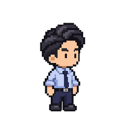
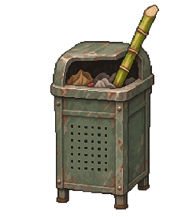

選擇你喜歡的角色

練習辨認規則，讓每一票好好表達。
用方向鍵或 A / D 左右移動；手機可按住左右按鈕。點地圖圈圈，角色就會走到事件旁。靠近後按 E 或「檢查附近事件」。
每個事件都要做一次判斷：不能做就打勾，可以做就不勾，再按「記下判斷」。8 件看完即可交卷。你隨時可以回去修改。
有效票的認定和建議的正確投票方式並不完全相同。實際投票請使用投票所圈選工具，在圈選欄圈選。
依中選會法規及官方資料整理。個案認定仍須視完整事實；本作不是選務機關。
垃圾桶裡有一根甘蔗，不知道是誰丟的。